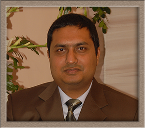

|  |
Faruque Ahmed
Computer Hardware Specialist, Novice Data scientist and ❤ Raspberry pi - Arduino - iot hobbyist |
| 2019 - Now | Msc | Information system | TH Köln | Germany |
| 2009 - 2013 | MBA | International Business | Birmingham city university | UK |
| 2003 - 2008 | Bsc | Computer Science | State University of Banglaesh | Bangladesh |
| Before 2002 | SSC and HSC | Science group | Dhaka Education Board | Bangladesh |
| 2016-2019 | F&H Multitrade. | Manager, ICT | POS system Development, Inventory System Design. Hardware Sales and service. Customer hardware support, ERP concept design. CCTV & Network setup. International Affairs. |
Bangladesh |
| 2013-2016 | Nasco power engineering Ltd. | Manager, ICT | Business Development, Inventory System, Hardware Sales and service, Tender Preparation, Project cordinator,Introduction and maintenance of computerize data bank. International Affairs. |
Bangladesh |
| 2009-2012 | Itech Mobile and Communication | Service Engineer | Laptop repair and upgrade. Desktop repair and upgrade. Install OS and loading driver (Windows, Mac, Linux), Trouble shooting of computer’s hardware and software. Customer support and marketing of various computers spare parts (screen, charger, laptop keyboard etc.) |
UK |
| International Affairs | Commercial Invoice and help bank to prepare Papers of Commercial documents and Letters of Credit. Monitor shipping Schedules. Follow up and respond the buyer/seller. |
| Tender procedure | e-Government Procurement (e-GP) portal user, Tender Document preparation and submit, Manage & monitoring the tender related team. |
| Foreign trade delegation conduct | Represent my company, Business presentation, Close door meeting with international clients. |
| Water Level sensor | DWASA Deep well | 300m deep well pump water level detection sytem. LMP307 submersible sensor setup , which have 4-20mA output signal. Display unit and switch setup with VFD |
| CCTV Monitoring System | DWASA 50 pump station | 50 pump in Various location in Dhaka. Hikvision IP camera setup with internet modem, Central data bank setup, Monitoring panel setup. |
| SCADA project | DWASA 10 pump station | Flow sensor , power sensor, 4G Comnication module and Sensor array setup which is the part of Scada projects |
| Bangla | Mother Language |
| English | Confident in all parts of the language, B2 level |
| German | Still learning , Basic Communication, A2 level |